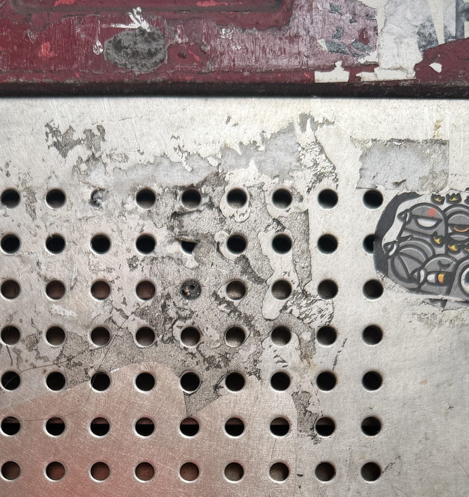
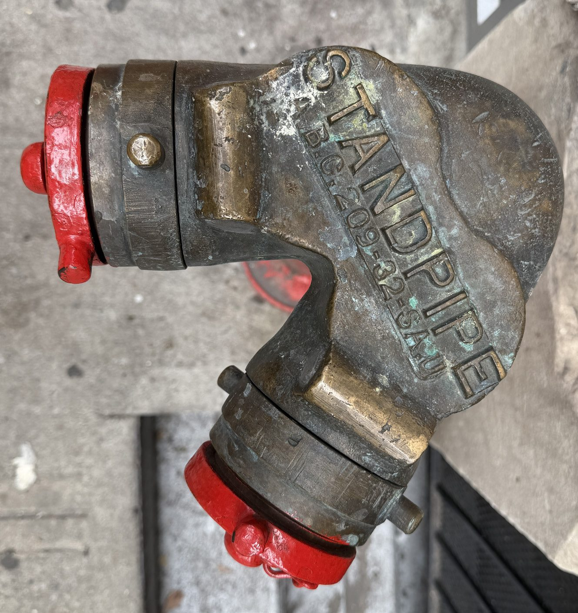
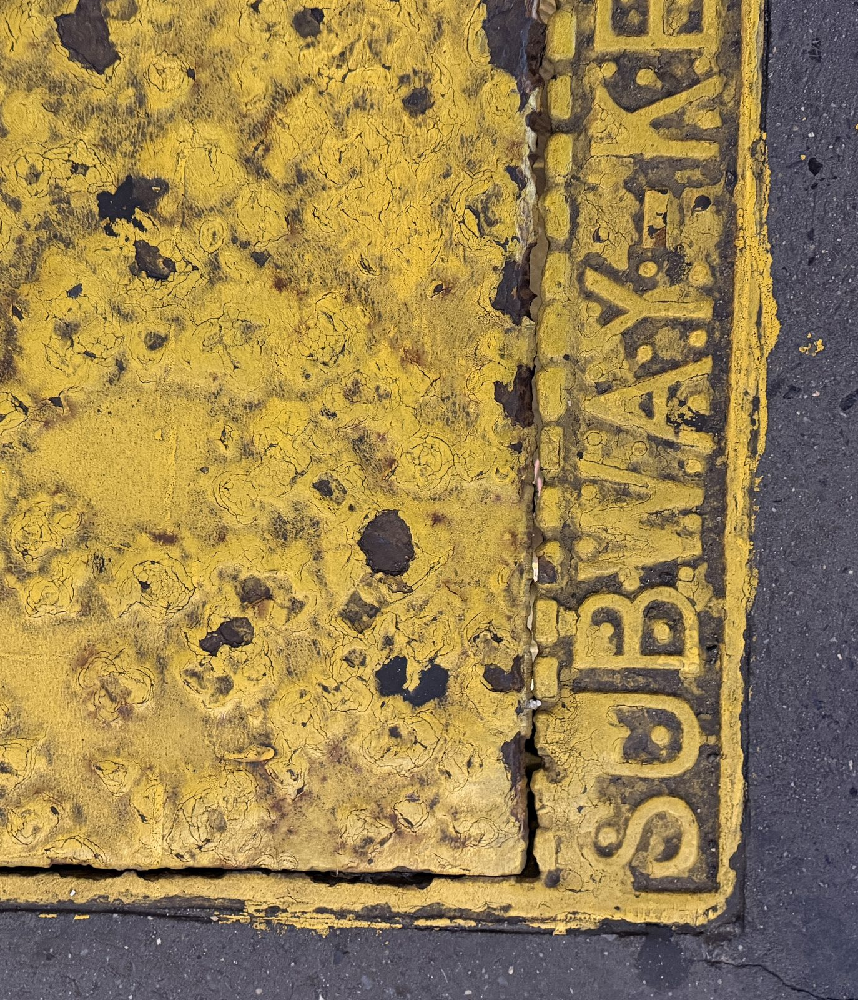

How to find your way with Maps, and how to pay for the subway and the bus.
Your phone came with a map already on it. On an iPhone it is called Maps, and its icon is a small square of streets with a road curving across it. You do not have to download anything, and you do not have to pay for it.
If you cannot see it on your home screen, you do not have to go hunting through pages of icons. Swipe down from the middle of the screen and a search field appears at the top. Type map into it — three letters is enough — and the app will be the first thing in the list.
If nothing you want comes up, the usual reason is a spelling the phone does not recognise. Delete a word rather than adding one — shorter searches find more, not less.
There are two or three addresses you will look up more than all the others put together. Maps lets you save them so you never type them again. They sit as round buttons under the search field, and one tap starts the directions.
The map is bigger than the screen, always. Three movements are all you need, and none of them can break anything — the map cannot be put somewhere it will not come back from.
The same map can be drawn three different ways, and you choose which. Tap the small stack of squares in the top right corner and the three appear. Nothing you pick here can get you lost — it is the same map underneath, every time.
Press each one. Nothing moves and nothing is sent anywhere — the line underneath just says what that view is for.
The everyday one. Streets, parks and shop names, and the one to leave it on. If you are not sure which view you are in, this is probably it.
Six places to be. Which of the three views would you put the map in? Press one and find out — nothing is sent anywhere, and you can run through them as many times as you like.
You are sitting at home and you want to know which subway line will get you to a hospital on the other side of town.
Transit. The lines are drawn over the streets in their own colours with the stations marked, so you can follow one with a finger. Map knows the streets but not the trains.
You have come up out of the subway and you have no idea which street you are standing on.
Map. Street names, written on the streets. This is the one it starts on and the one to come back to when the only thing you want is where am I.
You are going to a dentist you have never been to, and you would like to know what the door looks like before you are standing outside it.
Satelite. It is photographs from above rather than a drawing, so a building looks like itself. That is the one thing it is better at than the other two.
You want to know whether the bus stop at the end of your street is on a line that goes anywhere near the library.
Transit. Bus routes are drawn in as well as the subway, each in its own colour, so you can see where a stop leads before you stand at it.
You want to know whether there is a pharmacy on the next block.
Map. Shop names are drawn on it. Satelite would show you a roof, and a roof does not tell you what is underneath it.
Someone has told you to meet them “in the park, by the tennis courts”, and you want to see where the courts actually are.
Satelite. The park is a green shape on Map; in a photograph from above you can count the courts and see which gate is nearest to them.


A letter i in a circle means there is more here if you want it. It is never a warning and never a thing you have to deal with. Tapping it opens an explanation; tapping anywhere else closes it again.
It is worth knowing because it is the same mark everywhere — on the map, in Settings, in your bank's app. Once you have met it once you have met it everywhere.
A letter i in a circle. There is an explanation behind it if you want one, and nothing at all happens if you never tap it.
What appears once you have tapped it: Map, Transit and Satellite, side by side, waiting to be chosen between. Tapping one changes the drawing, not the place.
The worst place to work out a journey is standing on a platform. Do it at the kitchen table instead, where you can take as long as you like and there is nobody waiting behind you.

OMNY is the newer way to pay. Instead of sliding a card into a slot, you hold it flat against the reader on top of the turnstile and wait for the beep. There is nothing to insert and nothing to get the wrong way round.
If you are 65 or over, you are entitled to pay half. You have to apply for it once, and then you hold your own card against the same reader as everybody else. Nobody can tell which card you are holding, and nothing about using it is different.
The ordinary card. Anybody can buy one at a machine or a booth, and it costs the full fare.
The same card, applied for once, charging half. It is held against the same reader and nobody can see which one you have.
None of these mean you have done something wrong, and none of them need anybody's help to fix. They are the things that go wrong most, and what to do about each one standing right there.